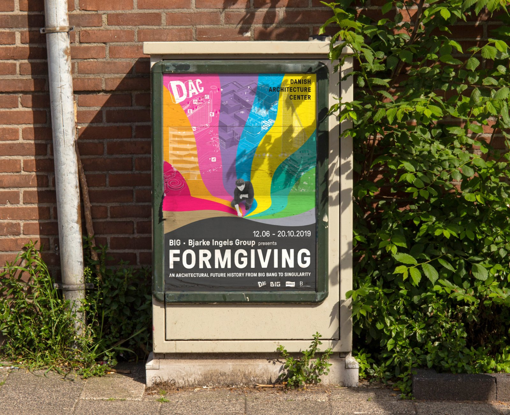
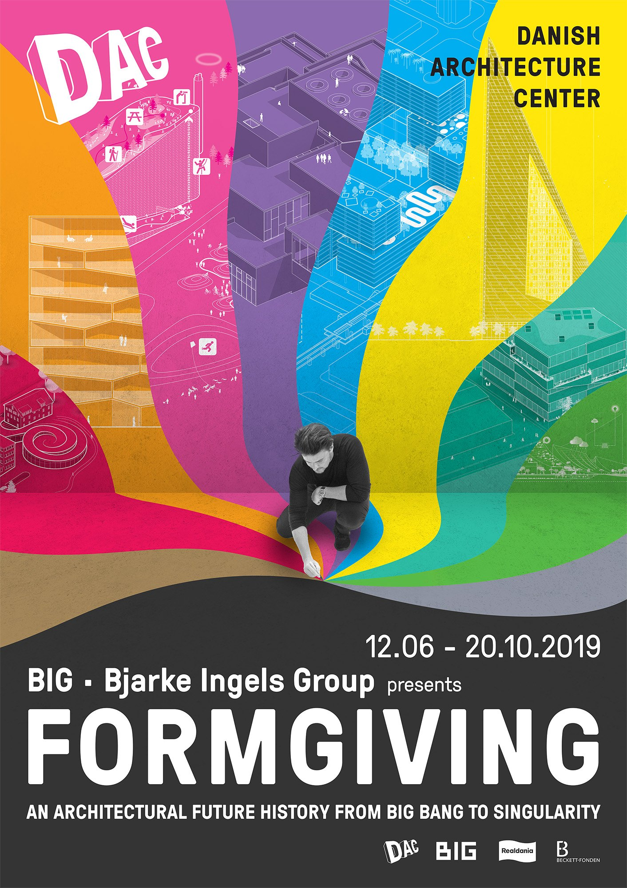
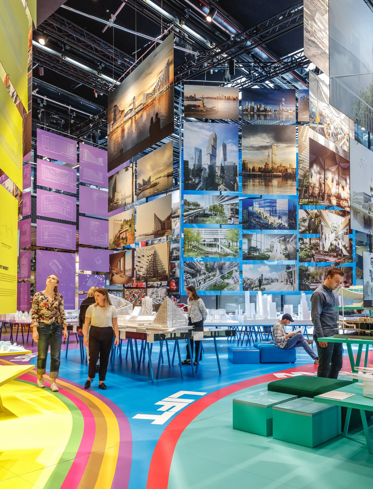
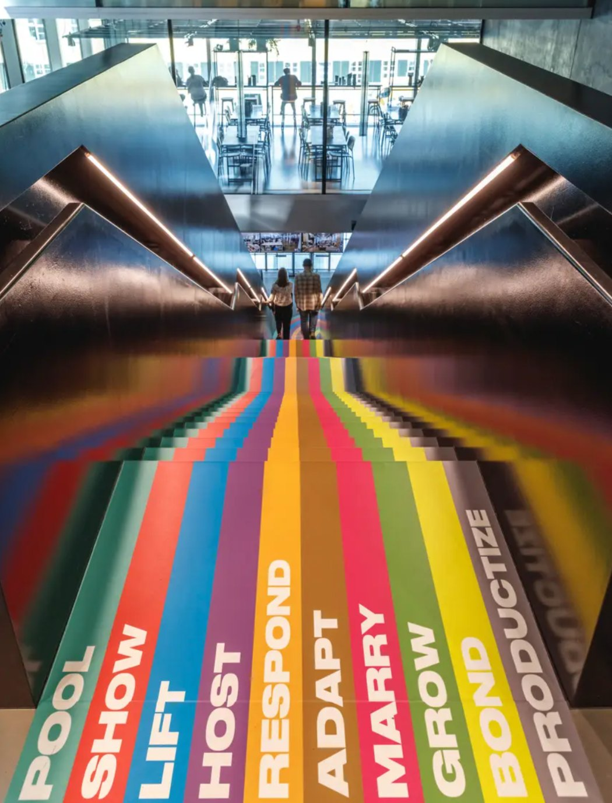
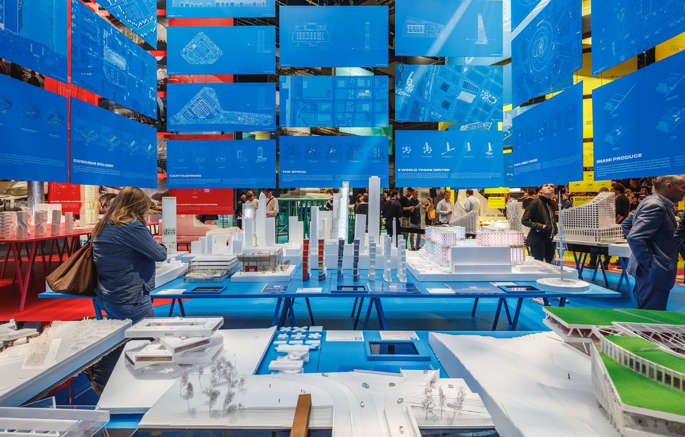
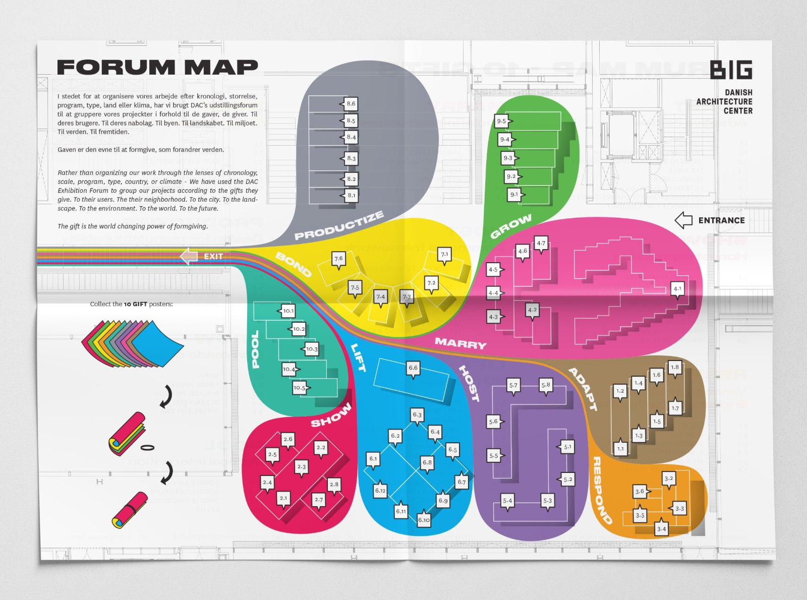
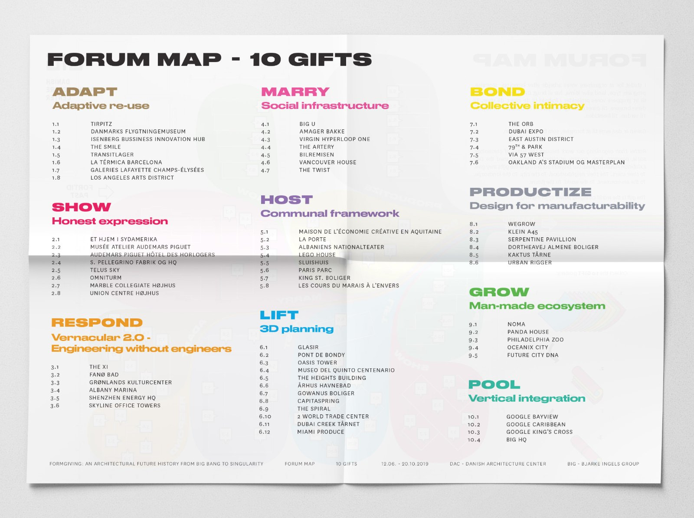
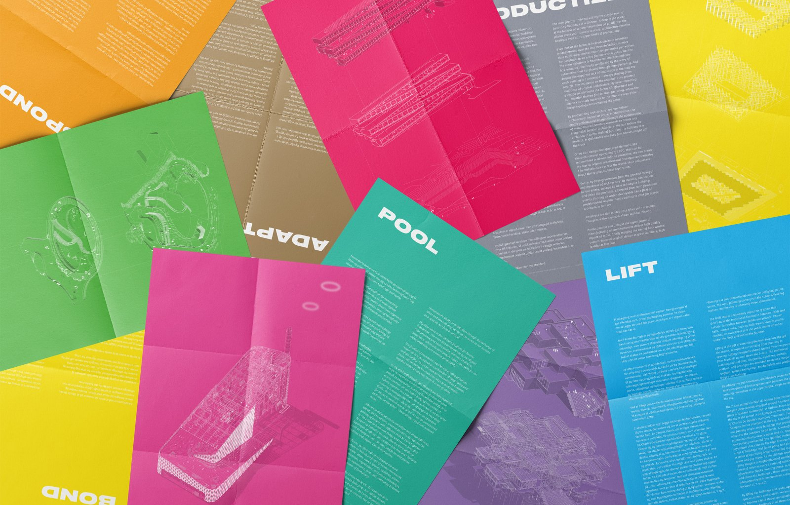
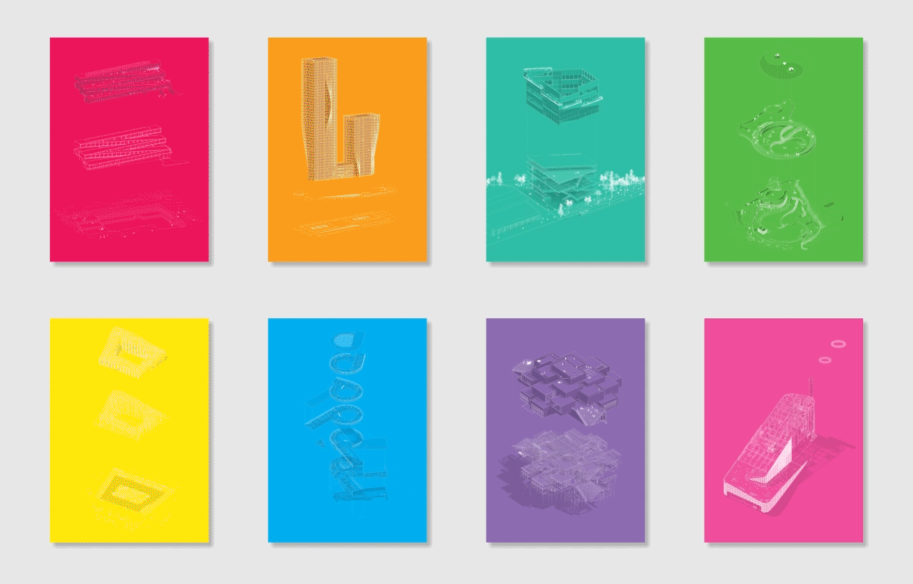
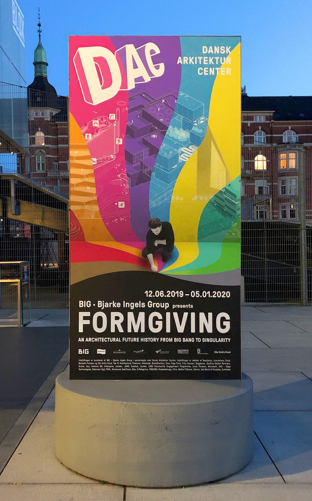

Formgiving Exhibition
As the Lead Graphic Designer at Bjarke Ingels Group (BIG) in 2019, I was part of the team that developed the studio’s largest exhibition to date, held at the Danish Architecture Center in Copenhagen. I was primarily responsible for all the graphic collateral, including posters, flyers, and maps. Formgiving took visitors on a chronological journey -- from the Big Bang, through the evolution of life as we know it, and into the possibilities of the future.


The main gallery featured 71 projects, each grouped according to the Gifts they offer to their users, neighborhoods, cities, landscapes, and the environment. These were organized into ten strategic themes: Adapt, Show, Respond, Marry, Host, Bond, Productize, Grow, and Pool.





As part of the exhibition experience, I designed a series of ten collectible posters, one for each category, which visitors could take home as souvenirs. On one side of each poster was an axonometric drawing of a project from the Gift, and on the other side, an essay in both Danish and English that explained the concept of the Gift.


